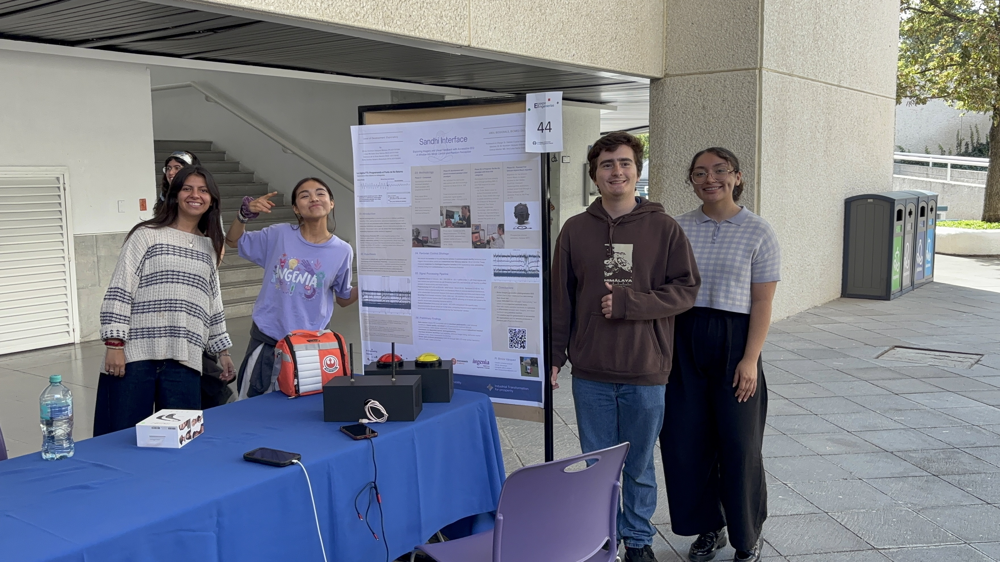
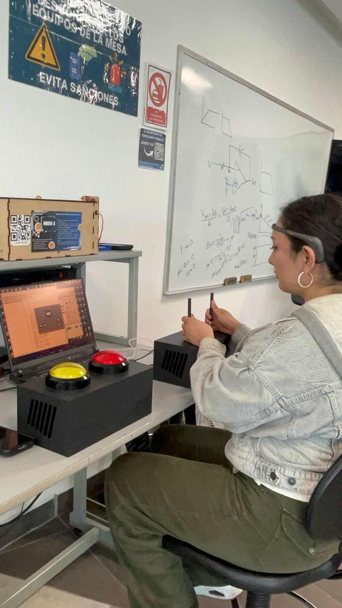

Studying the Readiness Potential as a neural marker of pre-impulse states — where neuroscience meets clinical relevance.
Automaticity is the shared mechanism across the compulsive spectrum — the same shift from decision to habit underlies OCD, addiction, and compulsive behavior. Every clinical tool available today measures a patient's distress — never whether the behavior itself has become automatic.
Sandhi measures that automaticity directly: testing whether the Readiness Potential — the neural signal that precedes a voluntary action — weakens once an action becomes compulsive. At what point does a habit stop being a decision and become automatic — and can we measure that before it becomes a diagnosis?
People worldwide will experience an impulse-related disorder in their lifetime
Kessler et al., NCS-R 2005
The neural window before conscious intent — the Readiness Potential window we study
Kornhuber & Deecke, 1965
Predictive decoding of decisions before conscious awareness — via fMRI
Haynes et al., 2008
Over sixty years of research show that voluntary actions are preceded by distinct neural signatures — measurable before the person is consciously aware of their intention to act.
Impulsive states manifest as detectable patterns of motor preparation in the brain — measurable via EEG — that differ significantly from controlled or inhibited responses. This "pre-impulse window" may eventually enable early intervention.
Kornhuber & Deecke describe a slow negative cortical potential beginning up to 2 seconds before self-initiated voluntary movement — originating in the supplementary motor cortex. The canonical neural signature of preparation for action.
Libet et al. demonstrate that the readiness potential precedes the felt "urge to move" by several hundred milliseconds — revealing that the brain initiates actions before conscious awareness of the intention. This finding opened the neuroscience of volition.
Haynes et al. demonstrate via fMRI that the outcome of a freely chosen decision can be decoded from brain activity 7–10 seconds before the subject is consciously aware of their choice — extending the pre-conscious window far beyond what EEG studies had shown.
Can this pre-impulse window be characterized using low-cost, accessible EEG hardware — and does it look different in the seconds before an unwanted compulsive action? That is our question.
Designed to be reproducible, transparent, and low-cost. Every step is documented in the open research log.
8 active dry EEG channels — Fz, Cz, C3, C4, Pz, PO7, PO8, Oz — purpose-built for Readiness Potential research. Cz sits at the vertex over SMA, the classic RP site; Fz and Pz add frontal and parietal context. Acquired in part with our €1,000 award at g.tec BR4IN.IO Spring School 2026.
Pilot-phase hardware: Muse 2 — 4-channel wireless EEG (AF7, AF8, TP9, TP10), 256 Hz, Bluetooth LE, streamed via Lab Streaming Layer (LSL) to LabRecorder. Used to validate the end-to-end acquisition pipeline ahead of the move to Unicorn Hybrid Black.
Voluntary free-movement paradigm. Baseline acquisition and full pipeline validation. Confirming that the readiness potential is detectable with our hardware configuration before advancing to task conditions.
Comparison of pre-motor neural activity between executed and successfully inhibited responses. Mapping what "stopping an impulse" looks like at the cortical level.
Differentiation of neural patterns preceding controlled versus impulsive actions. The core clinical application phase — characterizing the pre-impulse window in ecologically valid conditions.
Pre-action windows extracted around event markers — isolating the 1–2 s window before movement onset for epoch-based analysis.
Band power across delta, theta, alpha, beta, and gamma ranges. Identifying frequency-domain signatures of preparation states.
RP extraction via averaging across trials — isolating the slow negative deflection that precedes voluntary action from ongoing neural noise.
Statistical comparison of pre-motor patterns across conditions — controlled vs. impulsive, executed vs. inhibited — to identify discriminative neural features.
Phase 01 is complete. Sandhi has moved from internal prototyping to a validated pipeline with external participants. Here is what we confirmed, refined, and documented openly.
Validated the full data acquisition chain: Muse 2 → LSL → LabRecorder. Temporal data integrity confirmed across all pipeline stages with external participants — the project's first milestone beyond solo prototyping.
Confirmed sub-10 ms jitter between visual stimulus onset and EEG marker — meeting gold-standard thresholds for wireless BCIs. Stimulus-to-marker synchronization is production-ready for RP research.
Following clinical advisory, we refined our working definition: the Readiness Potential (RP) and beta desynchronization are studied jointly as a precognitive motor preparation biomarker — mapping the neural transition from impulse to action.
Openly documented: hair density, eyeglass use, and cranial morphology are critical modulators of HSI signal quality in uncontrolled environments. These are now tracked variables in our acquisition protocol, not unacknowledged confounds.


Robotics and Systems Engineering student at Tecnológico de Monterrey Campus Monterrey. NASA and MIT-adjacent experience. Leading Sandhi Interface as an independent research initiative with the conviction that meaningful neuroscience doesn't require institutional scale — only rigor, curiosity, and an honest research log. Associate researcher in Dr. Shriya Srinivasan's lab (ThinkNeuro) and active member of the Neuromatch Academy research community.
Research Interface Specialist
Mechatronics Engineering · 8th semester
Physical & UI interface for RP measurement
Research Interface Specialist
Mechatronics Engineering · 8th semester
Physical & UI interface for RP measurement
Human Factors Research Assistant
Future neuroscientist at UBC
Human factors & participant experience
Harvard Neuroscience · Hult MBA
Scientific direction
Clinical Psychologist
Founder, Serena Mente Puebla
Clinical framing
Profesora de cátedra, Facultad de Mecatrónica
Tec de Monterrey, Campus Puebla
SNI III · Senior Member IEEE · IEEE Student Branch Counselor
Profesor de cátedra, Facultad de Mecatrónica
Tec de Monterrey, Campus Puebla
This research is self-funded and independently conducted. If this question matters to you — as a researcher, a clinician, someone with lived experience, or simply someone who believes this science is worth doing — there are real ways to help.
We won €1,000 at g.tec BR4IN.IO Spring School 2026 and our Unicorn Hybrid Black has arrived. The hardware goal is met. What we need now: participant compensation, conference fees, and the cost of running real trials. Every contribution extends the runway directly.
Support on GoFundMeWe're looking for researchers in neuroscience and clinical psychology, engineers in signal processing and robotics, and anyone interested in replication or co-authorship.
Open an issue on GitHub